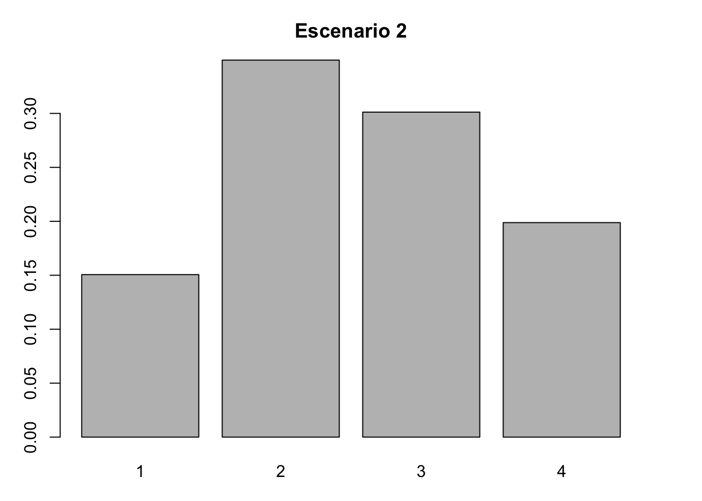
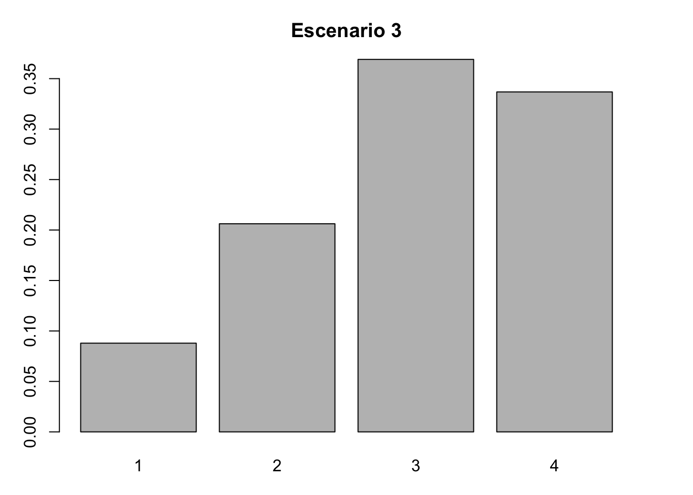
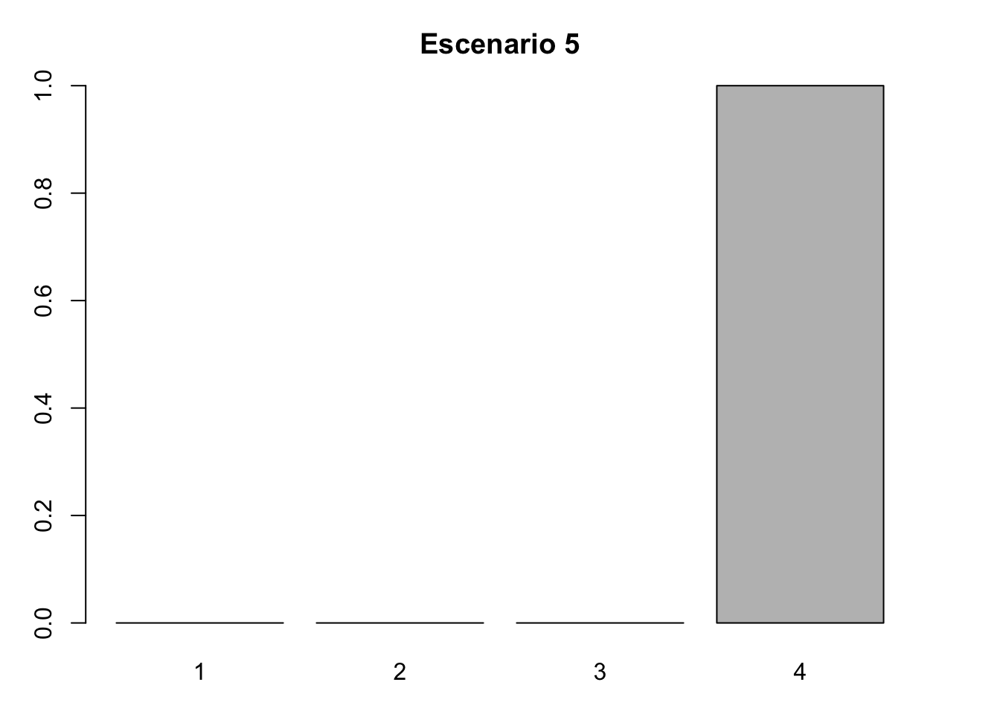
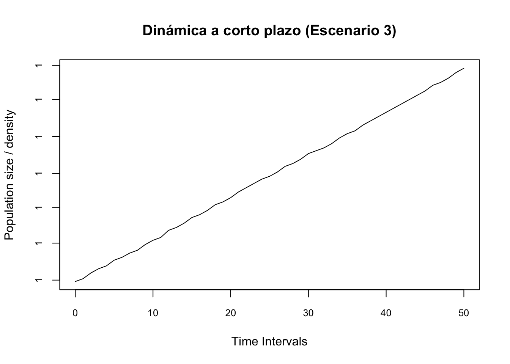
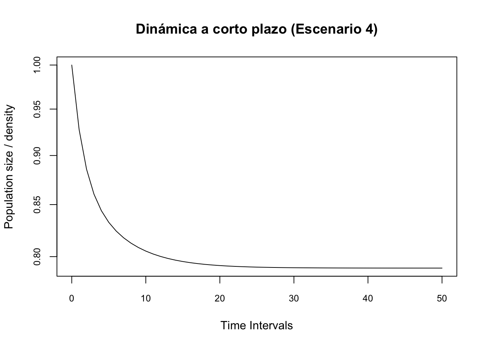
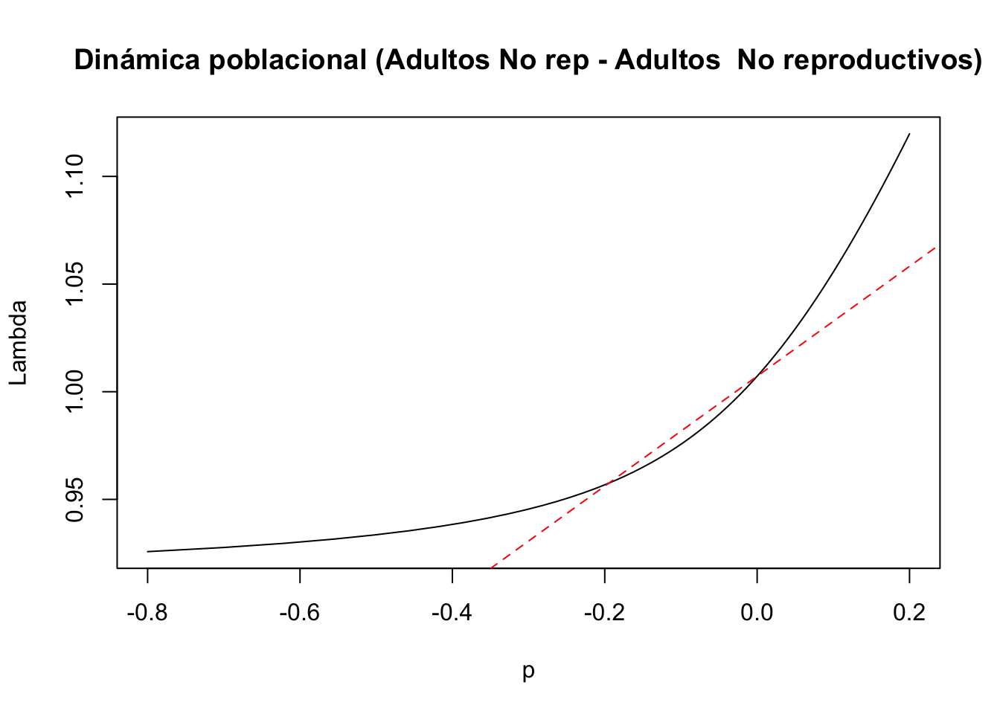

Capítulo 12 Librerías de R requeridas para el análisis
12.0.1 PASO 1. MATRIZ DE PROYECCIÓN POBLACIONAL y ESTRUCTURA POBLACIONAL INICIAL \(t_{0}\)
#Capturar los datos de la matriz para L. rubripetala (Tremblay et al. 2015)
Lr1 <- matrix(c(0.4324, 0, 0, 0.15,
0.3784, 0.8459, 0, 0,
0, 0.0034, 0.7954,0.2300,
0, 0.0890, 0.1841,0.7510), byrow=TRUE,ncol=4)
#Capturar las categorias de estado
estadios <- c("PL", "J", "NR", "AR")
colnames(Lr1) <- rownames(Lr1) <- estadios
#Obtener la matriz L. rubripetala
Lr1 <- matrix(Lr1[1:4, ], nrow = 4, dimnames = list(estadios, estadios))
Lr1## PL J NR AR
## PL 0.4324 0.0000 0.0000 0.150
## J 0.3784 0.8459 0.0000 0.000
## NR 0.0000 0.0034 0.7954 0.230
## AR 0.0000 0.0890 0.1841 0.751# Capturar y obtener el vector inicial (datos de campo) de clases de estado población 1 (Schödelbauerová et al. 2010)
n0 <- c(0, 46, 38, 82)
n0## [1] 0 46 38 8212.0.1.1 Capturar y obtener el vector inicial (datos de campo) de clases de estado población 1
Paso 1a. Matriz de transición y estructura poblacional inicial. En el siguiente cuadro se comprueba que la matriz de la estructura poblacional inicial de L. rubripetala haya sido incorporada sin errores. La primera formada por 4 renglones y 4 columnas y la segunda por 4 elementos, que indican el número de individuos encontrados en el estado de plántula (0), juvenil (46), adulto no reproductivo (38) y adulto reproductivo (82) (Tremblay, Raventos, and Ackerman 2015; Schödelbauerová, Tremblay, and Kindlmann 2010).
## PL J NR AR
## PL 0.4324 0.0000 0.0000 0.150
## J 0.3784 0.8459 0.0000 0.000
## NR 0.0000 0.0034 0.7954 0.230
## AR 0.0000 0.0890 0.1841 0.751## [1] 0 46 38 82Paso 2: Comprobar que se cumplan los supuestos de la matriz de estudio.
Previo al análisis de dinámica transitoria se debe comprobar que la matriz de transición poblacional sea: a) Cuadrada, que tiene igual número de filas que de columnas, b) No negativa, que todos sus elementos son positivos, por lo que son iguales o mayores a 0.000; c) Ergódica, que el crecimiento asintótico es independiente de la estructura poblacional al inicio del estudio; d) Irreducible, que los elementos de la matriz de análisis y, por lo tanto, los nodos de la gráfica del ciclo de vida, estén fuertemente conectados, tengan una ruta y desde cualquiera de las etapas pueda llegar a todas las otras formando un ciclo; e) Primitiva, que el resultado de elevar a altas potencias una matriz irreducible positiva (i.e. sin elementos negativos) único y tenga un sólo valor positivo (i.e. tasa de crecimiento poblacional). Para más información sobre estas condiciones revisar: (Stott et al. 2010).
Para evaluar si la matriz es cuadrada, no negativa, ergódica, primitiva e irreducible se usan las siguientes funciones de R: dim, isErgodic, isPrimitive y isIrreducible respectivamente. A través del comando positiv se determinó si todos los elementos de la matriz son positivos, por lo tanto, iguales o mayores a 0.000. A continuación se comprueba si la matriz de L. rubripetala cumple con estas condiciones o supuestos.
#PASO 2: CONDICIONES QUE DEBE CUMPLIR LA MATRIZ DE ESTUDIO#
# a) Dimensión de la matriz (filas x columnas): los valores deben ser iguales
dimension <- dim(Lr1)
# b) No negativa
positiv <- all(Lr1 >= 0)
# c) Ergódica
ergodica <- isErgodic(Lr1, digits=5, return.eigvec=FALSE)
# d) Irreducible
irreducible <- isIrreducible(Lr1)
# e) Primitiva
primitiva <- isPrimitive(Lr1)Paso 2a. Comprobación de los supuestos para las matrices de estudio. En el siguiente cuadro se presentan los resultados que comprueban que la matriz de L. rubripetala cumple con los supuestos establecidos para el análisis. Se comprueba que la matriz es cuadrada al tener 4 renglones y 4 columnas; asimismo, cumple con ser no negativa, ergódica, irreducible y primitiva al ser “TRUE” el resultado en los cuatro casos.
## [1] 4 4## [1] TRUE## [1] TRUE## [1] TRUE## [1] TRUEPaso 3: Análisis demográfico básico.
En el análisis de dinámica transitoria necesitamos conocer cómo se comporta una población en el largo plazo, por lo que se proyecta el crecimiento poblacional de tipo asintótico para la matriz de la población seleccionada. Entonces, a partir de la matriz de proyección poblacional y el correspondiente vector de la estructura poblacional observada al inicio del estudio de L. rubripetala, calcularemos la tasa de crecimiento poblacional (i.e.lambda, de ahora en adelante lambda-max), la estructura poblacional estable (w, de ahora en adelante w-max) y el valor reproductivo (v), así como las matrices de sensibilidad y elasticidad. Con este fin, usaremos el procedimiento de la Sección X, desarrollado en el programa popbio de R.
Además de esta información se estimarán dos nuevos indices: el tiempo de convergencia (convergence-time) y el índice de amortiguamiento (damping-ratio). El primero indica el tiempo esperado en que una población alcanza la estructura estable de una población con un crecimiento asimtótico, mientras que el segundo es una medida de que tan rápido (ciclos en tiempo de la matriz; meses, años) para que converge una población a la estructura estable (Caswell, 2001). Ese ultimo se calula dividiendo el valor propio dominante (el eigenvalue) con el segundo valor dominante (la parte real). (Si bien, la mayoría de los datos de los estudios poblacionales han sido colectados para un periodo de tiempo anual (Crone et al. 2011), es importante recordar que algunos han sido colectados mensual, bimensulamente, por estación o de forma bianual, dependiendo del ciclo de vida de la especie de estudio. En el caso de L. rubripetala los datos fueron colectados mensualmente, debido a la producción constante de estructuras reproductivas a lo largo del año (Tremblay, Raventos, and Ackerman 2015).
12.0.2 Crecimiento asintótico
La definición del crecimiento asintótico de la población lambda se basa en la tasa de crecimiento poblacional cuando la población este a su nivel estable de estructura de edades/estados. Por consecuencia se asume que la población llegue o este a un nivel estructura de edades/estados estable.
Para la población de Lepanthes rubripetala se obtiene una tasa de crecimiento poblacional de 1.007, lo que indica que la población crece a una tasa constante de 1.007 entre \(t_{0}\) y \(t_{1}\). Entonces si la población tuviese 1000 individuos hubiese 7 individuos más en \(t_{1}\).
#Análisis asintótico (i.e. largo plazo) del crecimiento poblacional de L. rubripetala
#La orquídea florece todo el año, por lo que el seguimiento de la población fue mensual.
#PARÁMETROS POBLACIONALES
##lambda: Tasa de crecimiento poblacional
lambda <-lambda(Lr1)
lambda## [1] 1.00720612.1 Estructura estable
La estructura estable de edades/etapas es un indice de la distribución proporcional de la poblacional que se espera que esta población alcance en el largo plazo. En el caso de Lepanthes rubripetala se espera que la población alcance una estructura estable de 0.088, 0.206, 0.369 y 0.337 para las categorías de plántulas, juveniles, adultos no reproductivos y adultos reproductivos, respectivamente. Esta estructura asume que el crecimiento poblacional lambda \(\lambda\) sigue igual y constante en el tiempo.
## PL J NR AR
## 0.08789851 0.20619682 0.36907404 0.33683063Uno puede visualizar la estructura la estructura de la población usando el codigo siguiente.
Wdf=data.frame(Wmax)
Wdf$Categorias=c("Plántulas","Juveniles","Adultos no reproductivos","Adultos reproductivos")
Wdf$Categorias=factor(Wdf$Categorias, levels=c("Plántulas","Juveniles","Adultos no reproductivos","Adultos reproductivos"))
library(ggplot2)
ggplot(Wdf, aes(y=Wmax, x=Categorias)) +
geom_bar(stat="identity", fill="blue") +
labs(title="Estructura estable de estados", x="Categoría", y="Proporción") +
theme_minimal()
12.2 Valores reproductivos
El valor reproductivo v es un indice de la contribución de cada categoría de edad/estado a la tasa de crecimiento poblacional. En el caso de Lepanthes rubripetala se espera que la categoría de adultos reproductivos contribuya más a la tasa de crecimiento poblacional, seguido por la categoría de adultos no reproductivos, juveniles y plántulas. Los valores en la lista de v se compara con la primera edad/estado. Por consecuencia un individuo de la 4ta etapa (adulto reproductivo) tiene un potencial de dejar 2.7 individuos al comparar que una plantula tiene solamente tiene un valor de 1.0. La diferencia es que los individuos pequeños tienen que sobrevivir y llegar a las etapas mayores para contribuir a la tasa de crecimiento poblacional.
## PL J NR AR
## 1.000000 1.519043 2.316113 2.66467612.3 Análisis de elasticidad
La elasticidad es un indice de la sensibilidad de la tasa de crecimiento poblacional a los cambios en las tasas de supervivencia, crecimiento y reproducción de cada categoría de edad/estado. La suma de todas las proporciones es 1.0, por consecuencia uno puede comparar el efecto de cambios proporcional en cada parámetro y evaluar su impacto. En el caso de Lepanthes rubripetala se espera que la tasa de crecimiento poblacional sea más sensible a los cambios en la supervivencia de los etapas 3 y 4 ya que tienen una elasticidad de 0.313 y 0.311 respectivamente. Si sumamos el componente de supervivencia (la diagonal) de la matriz de transición poblacional, la suma es (0.018 + 0.122 + 0.313 + 0.311) = 0.764. Por consecuencia, las etapas de supervivencia de los individuos contribuyen a 76.4% y son las etapas más sensitivas a los cambios demográficos. Al comparar si uno fuese a hacer un cambio proporcional en la reproducción (los adultos que dejan plántulas) tendría un impacto mucho más pequeño, solamente de 2.3%.
Los análisis de elasticidad pueden ser usado para evaluar que etapas que pudiese ayudar en enfocar las alternativas de manejo para cambiar la tasa de crecimiento poblacional. Por ejemplo si es una especie en peligro de extinción, uno puede enfocar los trabajos de manejo de la especie en mejorar la supervivencia de los individuos de las etapas más sensitivas. Al contrario si es una especie invasora, uno puede enfocar los trabajos de manejo en reducir la supervivencia de las etapas más sensitivas. En este caso seria reducir la supervivencia de los adultos reproductivos y no reproductivos. Enfocando en las etapas más sensitivas es una forma de maximizar el impacto de los trabajos de manejo con menos recursos. Naturalmente se asume que el manejo de estas etapas es posible, por ejemplo si la elasticidad es alta en una de las tranciciones, por ejemplo juvenil a adultos, pero no se conoce cual son la variables ambientales que impacta esa transiciones no se puede hacer un manejo efectivo.
## PL J NR AR
## PL 0.018 0.000 0.000 0.023
## J 0.023 0.122 0.000 0.000
## NR 0.000 0.001 0.313 0.083
## AR 0.000 0.023 0.083 0.31112.4 Análisis de Amortiguamiento/Damping Ratio
El análisis de amortiguamiento es un indice de la rapidez con la que una población converge a su estructura estable después de un disturbio (Jiang et al. 2020). El indice de amortiguamiento \(d > 0\), y más grande el indice de amortiguamiento más rápido la población converge a la estructura estable. Se ha demostrado que hay una relación entre el indice de amortiguamiento y tiempo de generación de una especie (Jiang et al. 2020). El tiempo de amortiguamiento se calcula \(\tau=1/d\). Usando la función dr del paquete popbio, en el caso de Lepanthes rubripetala se espera estima que el indice de amortigamiento es 1.2 y que la población converga a su estructura estable en 12 meses, ya que los datos fueron recolectado y analizado mensualmente. Si los datos son recolectado fueron recolectado una vez al año entonces la población converga a su estructura estable en 12 años. Un supuesto importante es que la tasa de crecimiento intrínseca es igual para todos los periodos subsiguientes.
## $dr
## [1] 1.210702
##
## $t
## [1] 12.0427812.5 Análisis de Convergencia
El tiempo de convergencia puede ser calculado a base de la cantidad de individuos en las diferentes etapas o edades. El tiempo de convergencia es el tiempo esperado en que una población alcanza la estructura estable. En el caso de Lepanthes rubripetala se espera que la población alcance la estructura estable en 25 meses si se comienza con una población sesgada de solamente plántulas (n=1000) y ninguno en las etapas subsiguientes.
# Tiempo de convergencia
n = c(1000, 0, 0, 0)
tconvergencia <- convt(Lr1, accuracy = 1e-3, vector = n)
tconvergencia## [1] 25Si comenzamos con una población mucho más cerca a la estructura estable, podemos calcular el tiempo de convergencia. Digamos que se comienza con una población de 8, 20, 27 34 individuos en las etapas 1, 2, 3 y 4 respectivamente. En este caso se espera que la población alcance la estructura estable en 6 meses. En este caso vemos que el tiempo de convergencia es mucho más corto que si se comienza con una población sesgada de solamente plántulas.
## [1] 612.6 Dinámica transitoria
En la dinámica transitoria o de corto plazo, Stott y colaboradores (2010, 2012) incorporaron la estocasticidad demográfica para analizar el cambio de la estructura poblacional debido a una perturbación de origen biótico, abiótico o antropogénico (i.e. cambios en la estructura incicial observada). Este tipo de estocasticidad se refiere a la sobrevivencia y reproducción en número entero y finito; es decir, un individuo sobrevive o no, lo cual se representa con 1 ó 0, al igual que puede reproducirse (1) o no (0). La incorporación de esta característica en los individuos genera una variación no cíclica ni predecible en la respuesta de los individuos de una población.
En el análisis transitorio, el modelo sesgado por etapas (i.e. categorías) es el procedimiento que se usa para evaluar la perturbación de la estructura inicial. La perturbación o sesgo en la estructura inicial se evalúa modificando la proporción de individuos presentes en alguna categoría de la estructura poblacional. Cabe señalar que estas modificaciones representan distintos escenarios o simulaciones que ocurren o pueden ocurrir en nuestra población de estudio.
Por ejemplo, la estructura inicial en la población 1 de Lepanthes rubripetala fue la siguiente: (0,46,38,82). En este caso, al modificar la proporción de individuos presente en una, dos o en todas las categorías de la población se simuló el cambio en la dinámica en el corto plazo; es decir, en un momento previo a que se alcance el crecimiento estable o de largo plazo. En Lepanthes rubripetala se hicieron cinco simulaciones o escenarios al suponer las siguientes proporciones de individuos por categoría (Tremblay et al, 2015):
- Límite inferior: (1,0,0,0), los individuos de la población se contran en la categoría de plántulas (Lower bound).
- Inicio I: (0.15, 0.35, 0,30, 0.20), mayor proporción de individuos en las categorías juvenil y adulto no reproductivo.
- Estructura estable de la población: los individuos de la población tienen una abundancia de acuerdo con w-max.
- Inicio II: (0.4, 0.2,0.2, 0.2), mayor proporción de plántulas y una proporción similar en las categorías juvenil, adulto no reproductivo y adulto reproductivo.
- Límite superior: (0,0,0,1), los individuos de la población se contran en la categoría de adulto reproductivo.
Dinámica poblacional absoluta. Como consecuencia de las perturbaciones o escenarios existen cambios en el crecimiento poblacional, los cuales son evidentes si se grafican. Un aspecto a considerar es que, la gráfica que se genera incluye la influencia de la dinámica trasitoria y asintótica, por lo que se le denomina dinámica poblacional absoluta (Fig. 2A de Tremblay y colaboradores, 2015).
##PASO 4. DINÁMICA POBLACIONAL ABSOLUTA.
#Se proyecta el crecimiento poblacional ante cambios en la estructura
#inicial debidos a la perturbación (5 escenarios). Esta gráfica incluye la
#influencia de la dinámica trasitoria y asintótica, por lo que se le denomina
#dinámica poblacional absoluta. Proyección a 50 meses.
#Definir los margenes
par(mfrow = c(1, 1))
par(mar = c(3, 3, 3, 3))
#Librerias de R requeridas para el análisis
library(popdemo)
library(popbio)
library(ggplot2)
library(dplyr)
library(scales)
#Vector original
nLr0 <- c(0, 46, 38, 82)
#Escenario 1. Límite inferior
nLr1 <- c(166, 0, 0, 0)
#Proporción de individuos por categoría
nLr1 <- nLr1/sum(nLr1)
nLr1## [1] 1 0 0 0#Gráfica de barras del escenario 1
barplot(nLr1, names.arg = 1:4)
title(main = "Escenario 1", xlab = "Categoría", ylab = "Proporción")
#Proyección de la dinámica escenario 1
pr1 <- project(Lr1, vector = nLr1, time = 50)
plot(pr1, log = "y", ylim = c(0.1, 1.6), ann = FALSE)
title(main = "Proyección de la dinámica (Escenario 1)", xlab = "Time intervals", ylab = "Population size/density")
#Escenario 2. Inicio I
nLr2 <- c(25, 58, 50, 33)
#Proporción de individuos por categoría
nLr2 <- nLr2/sum(nLr2)
nLr2## [1] 0.1506024 0.3493976 0.3012048 0.1987952#Gráfica de barras del escenario 1
barplot(nLr2, names.arg = 1:4)
title( main = "Escenario 2", xlab = "Categoría", ylab = "Proporción")
#Proyección de la dinámica escenario 2
pr2 <- project(Lr1, vector = nLr2, time = 50)
plot(pr2, log = "y", ylim = c(0.1, 1.6), ann = FALSE)
title(main = "Proyección de la dinámica (Escenario 2)", xlab = "Time intervals", ylab = "Population size/density")
#Escenario 3. Estructura estable
nLr3 <- Wmax
#Gráfica de barras del escenario 3
barplot(nLr3, names.arg = 1:4)
title( main = "Escenario 3", xlab = "Categoría", ylab = "Proporción")
## PL J NR AR
## PL 0.4293064 0.000000000 0.0000000 0.1489268
## J 0.3756927 0.839848010 0.0000000 0.0000000
## NR 0.0000000 0.003375675 0.7897093 0.2283545
## AR 0.0000000 0.088363250 0.1827829 0.7456270## eigen() decomposition
## $values
## [1] 1.0000000+0.00000000i 0.8259670+0.00000000i 0.4892619+0.06421907i
## [4] 0.4892619-0.06421907i
##
## $vectors
## [,1] [,2] [,3] [,4]
## [1,] -0.1605030+0i -0.03255031+0i -0.6050037+0.1108223i -0.6050037-0.1108223i
## [2,] -0.3765163+0i 0.88098064+0i 0.6483299+0.0000000i 0.6483299+0.0000000i
## [3,] -0.6739307+0i -0.46400142+0i 0.1712014+0.2009688i 0.1712014-0.2009688i
## [4,] -0.6150542+0i -0.08669643+0i -0.2913524-0.2162698i -0.2913524+0.2162698ipr3 <- project(Lr1st, vector = Wmax, time = 50)
plot(pr3, log = "y", ylim = c(0.1, 1.6), ann = FALSE)
title(main = "Proyección de la dinámica (Escenario 3)", xlab = "Time intervals", ylab = "Population size/density")
#Escenario 4. Inicio II
nLr4 <- c(66, 33, 33, 33)
#Proporción de individuos por categoría
nLr4 <- nLr4/sum(nLr4)
nLr4## [1] 0.4 0.2 0.2 0.2#Gráfica de barras del escenario 4
barplot(nLr4, names.arg = 1:4)
title( main = "Escenario 4", xlab = "Categoría", ylab = "Proporción")
#Proyección de la dinámica escenario 4
pr4 <- project(Lr1, vector = nLr4, time = 50)
plot(pr4, log = "y", ylim = c(0.1, 1.6), ann = FALSE)
title(main = "Proyección de la dinámica (Escenario 4)", xlab = "Time intervals", ylab = "Population size/density")
#Escenario 5. Límite superior
nLr5 <- c(0, 0, 0, 166)
#Proporción de individuos por categoría
nLr5 <- nLr5/sum(nLr5)
nLr5## [1] 0 0 0 1#Gráfica de barras del escenario 5
barplot(nLr5, names.arg = 1:4)
title( main = "Escenario 5", xlab = "Categoría", ylab = "Proporción")
#Proyección de la dinámica escenario 5
pr5 <- project(Lr1, vector = nLr5, time = 50)
plot(pr5, log = "y", ylim = c(0.1, 1.6), ann = FALSE)
title(main = "Proyección de la dinámica (Escenario 5)", xlab = "Time intervals", ylab = "Population size/density")
#Gráfica de la dinámica absoluta
Population_density <- stack(c(as.data.frame(pr1), as.data.frame(pr2), as.data.frame(pr3), as.data.frame(pr4), as.data.frame(pr5)))
Population_density[, "time"] <- rep(seq(1, nrow(pr1), 1), 5)
names(Population_density) <- c("Values", "Projection", "Time")
#Population_density[, "Projection"] <- c(rep("Projection 1", len), rep("Projection 2", len), rep("Projection 3", len), rep("Projection 4", len), rep("Projection 5", len))
abs.plot <- ggplot(data = Population_density) +
theme_classic() +
theme(panel.border = element_blank()) +
theme(legend.position = "none") +
geom_line(aes(x = Time, y = Values, group = Projection, colour = Projection), linewidth = 0.8) +
geom_hline(yintercept = 1, linewidth = 0.8) +
scale_colour_manual(values = c("#C6E2FF", "#B9D3EE", "black", "#9FB6CD", "#6C7B8B")) +
theme(axis.title.x = element_text(vjust = -1, size = 12)) +
theme(axis.title.y = element_text(vjust = 1, size = 12)) +
theme(axis.text = element_text(size = 12)) +
labs(title = "Absolut population dynamics", x = "Projection intervals", y = "Population density relative to lambda max")+
theme(plot.title = element_text(hjust = 0.5, face = "bold", size = 12))
abs.plot 
##Dinámica transitoria estandarizada: límites
Con el fin de evaluar en el corto plazo los cambios cuantitativos en la población en respuesta a una perturbación determinada se calculan los límites de la dinámica transitoria a través Índices de transferencia y se proyecta el crecimiento de la población en el corto plazo.
#Dinámica transitoria específica de la población.
a proyección se hace sin la influencia de la dinámica asintótica. hecho que facilita y hace equitativa la comparación entre los modelos de los distintos escenarios. Se elimina el efecto de la dinámica asintótica al estandarizar la matriz y el vector de la estructura. En el primer caso se usa el comando ‘standard.A=T’, lo cual supone que en el largo plazo la tasa de crecimiento poblacional tendrá un valor de 1 (unidad) -por lo que la población no crecerá ni declinará, en el segundo caso se usa el comando ‘standard.vec=T’, que implica que éste suma 1 (Stoot et al., 2010, 2012). DINÁMICA POBLACIONAL TRANSITORIA ESTANDARIZADA
Índices de transferencia. Con el fin de evaluar en el corto plazo qué cambios cuantitativos habría en la población como respuesta ante una perturbación determinada, se calculan los límites de la dinámica transitoria a través de los Índices de transferencia, que incluyen los siguiente tres parámetros (Stoot et al. 2012):
Reactividad alta y Reactividad baja (Upper reactivity y Lower reactivity) que representan el crecimiento o el decremento inmediato (i.e. primer intervalo de tiempo) de la población antes de alcanzar la tasa constante de crecimiento poblacional.
Máxima amplificación/Máxima atenuación (Maximum amplification/Maximum attenuation) que indican,respectivamente, el incremento o decremento máximo futuro del crecimiento poblacional previo a alcanzar la tasa constante de crecimiento poblacional.
Inercia alta e Inercia baja (Upper inertia y Lower inertia) que evalúan el límite más alto o el más bajo en el crecimiento de la población antes de alcanzar la tasa constante de crecimiento poblacional, respectivamente.
### PARTE II: DINÁMICA POBLACIONAL TRANSITORIA ESTANDARIZADA.
#Modelo de Dinámica transitoria específica de la población
## La dinámica de corto plazo se projecta a partir de la matriz de transición y el vector inicial previamente definidos
#Definir los margenes
library(popdemo)
library(ggplot2)
#Vector de estructura inicial: abundancia por categoría de acuerdo con el estado
n0 <- c(0, 46, 38, 82)
## 1) PROYECCIÓN DE LA DINÁMICA DE CORTO PLAZO. Con la función PROJECT se proyectar la a 50 meses, tomando en
#cuenta la matriz de transición poblacional y el vector de la estructura.
#En esta función se elimina el efecto de la dinámica asintótica al estandarizar:
#a) la matriz usando el comando 'standard.A=T', lo cual significa que
#en el largo plazo la tasa de crecimiento poblacional tendrá
#un valor de 1 (unidad), por lo que la población no crecerá ni declinará.
#b) el vector de la estructura usando 'standard.vec=T', lo cual supone que éste suma 1,
# Ambas estandarizaciones facilitan y hacen equitativa la comparación entre modelos
#con distintos tamaños poblacionales y distintas tasas de crecimiento de largo plazo.
#Gráfica de la dinámica de corto plazo por escenario. En la graficación se usa la misma matriz pero se cambia el vector de acuerdo con el escenario
#Escenario 1: Límite inferior
pr2.1 <- project(Lr1, vector = nLr1, time = 50,
standard.A = T, standard.vec = T)
#Plot the amplification projection and label it
# Se atenua (decrece)
plot(pr2.1, log = "y", main = "Dinámica a corto plazo (Escenario 1)", cex.axis = 0.8)
#Escenario 2. Inicio I
pr2.2 <- project(Lr1, vector = nLr2, time = 50,
standard.A = T, standard.vec = T)
#Plot the amplification projection and label it
plot(pr2.2, log = "y", main = "Dinámica a corto plazo (Escenario 2)", cex.axis = 0.8) # Se atenua (decrece)
#Escenario 3. Estructura estable
pr2.3 <- project(Lr1, vector = nLr3, time = 50,
standard.A = T, standard.vec = T)
#Plot the amplification projection and label it
plot(pr2.3, main = "Dinámica a corto plazo (Escenario 3)", cex.axis = 0.8)# Se amplifica (crece)
#Escenario 4. Inicio II
pr2.4 <- project(Lr1, vector = nLr4, time = 50,
standard.A = T, standard.vec = T)
#Plot the amplification projection and label it
plot(pr2.4, log = "y", main = "Dinámica a corto plazo (Escenario 4)", cex.axis = 0.8)# Se atenua (decrece)
#Escenario 5. Límite superior
pr2.5 <- project(Lr1, vector = nLr5, time = 50,
standard.A = T, standard.vec = T)
#Plot the amplification projection and label it
plot(pr2.5, log = "y", main = "Dinámica a corto plazo (Escenario 5)", cex.axis = 0.8)# Se amplifica (crece)
#2) LIMITES TRANSITORIOS POR ESCENARIO.
#Escenario 1: Límite inferior
#Cálculo de los limites transitorios
library(popdemo)
lim.trans <- as.data.frame(matrix(NA, 5, 3))
names(lim.trans) <- c("reac", "maxatt", "inertia")
reac1<-reac(Lr1, vector = nLr1)
lim.trans[1, 1] <- reac1
reac1## [1] 0.8049991## $maxatt
## [1] 0.4643848
##
## $t
## [1] 49## [1] 0.4643642## [1] 0.9628771## $maxatt
## [1] 0.8863718
##
## $t
## [1] 39## [1] 0.8863327lim.trans[2, 3] <- inertia2
#Escenario 3. Estructura estable
reac3<-reac(Lr1, vector = nLr3)
lim.trans[3, 1] <- reac1
reac3## [1] 1## $maxamp
## [1] 1
##
## $t
## [1] 1## [1] 1lim.trans[3, 3] <- inertia3
#Escenario 4. Inicio II
reac4<-reac(Lr1, vector = nLr4)
lim.trans[4, 1] <- reac1
reac4## [1] 0.9273971## $maxatt
## [1] 0.7894384
##
## $t
## [1] 42## [1] 0.7894036lim.trans[4, 3] <- inertia4
#Escenario 5. Límite superior
reac5<-reac(Lr1, vector = nLr5)
lim.trans[5, 1] <- reac5
reac5## [1] 1.122908## $maxamp
## [1] 1.23733
##
## $t
## [1] 34## [1] 1lim.trans[5, 3] <- inertia5
# Dinamica transitoria plot
len <- nrow(pr2.1)
Population_density <- stack(c(as.data.frame(pr2.1), as.data.frame(pr2.2), as.data.frame(pr2.3), as.data.frame(pr2.4), as.data.frame(pr2.5)))
Population_density[, "time"] <- rep(seq(1, len, 1), 5)
names(Population_density) <- c("Values", "Projection", "Time")
Population_density[, "Projection"] <- c(rep("Projection 1", len), rep("Projection 2", len), rep("Projection 3", len), rep("Projection 4", len), rep("Projection 5", len))
trans.plot <- ggplot(data = Population_density) +
theme_classic() +
theme(panel.border = element_blank()) +
theme(legend.position = "none") +
geom_line(aes(x = Time, y = Values, group = Projection, colour = Projection), linewidth = 0.8) +
scale_colour_manual(values = c("#C6E2FF", "#B9D3EE", "black", "#9FB6CD", "#6C7B8B")) +
theme(axis.title.x = element_text(vjust = -1, size = 12)) +
theme(axis.title.y = element_text(vjust = 1, size = 12)) +
theme(axis.text = element_text(size = 15)) +
labs(title = "Transient population dynamics" ,x = "Projection intervals", y = "Population density relative to lambda max") +
theme(plot.title = element_text(hjust = 0.5, face = "bold", size = 12)) +
ylim(0.2, 1.5)
trans.plot +
geom_text(x = 45, y = 1.09, label = expression(paste(bar(rho) == 0.46)), hjust = 1.0, vjust = -1) +
geom_text(x = 45, y = 0.74, label = expression(paste(bar(rho) == 0.89)), hjust = 1.0, vjust = -1) +
geom_text(x = 45, y = 0.64, label = expression(paste(bar(rho) == 0.70)), hjust = 1.0, vjust = -1) +
geom_text(x = 45, y = 0.33, label = expression(paste(bar(rho) == 1)), hjust = 1.0, vjust = -1)## Warning in is.na(x): is.na() applied to non-(list or vector) of type
## 'expression'
## Warning in is.na(x): is.na() applied to non-(list or vector) of type
## 'expression'
## Warning in is.na(x): is.na() applied to non-(list or vector) of type
## 'expression'
## Warning in is.na(x): is.na() applied to non-(list or vector) of type
## 'expression'
##Funciones de transferencia Finalmente, el cálculo de las funciones de transferencia representa el último paso en análisis de dinámica transitoria establecido por Stott y colaboradores (2012). A través de estas ecuaciones se evalúa la elasticidad o efecto de la perturbación sobre la dinámica poblacional. A diferencia de las matrices de elasticidad de los modelos de proyección poblacional, estas elasticidades no son lineales y evidencian la importancia relativa de la de la perturbación en la categoría de tamaño/estado sobre el crecimiento de la población en el corto plazo. Estas ecuaciones también están disponibles en el programa Popdemo de R y sus resultados se representan a través de gráficas.
La perturbación de la estructura está determinada ppor dos vectores d y e
##PASO 6: ANALISIS DE LAS FUNCIONES DE TRANSFERENCIA
#Establecer márgenes:
#Vector original
library(popdemo)
nLr0 <- c(0, 46, 38, 82)
#PERTURBACIÓN DEL VECTOR ORIGINAL
#1) Entrada de la matriz a(1,1): plántulas a plántulas
tf1 <- tfa_lambda(Lr1, d = c(1, 0, 0, 0),
e = c(1, 0, 0, 0),
prange = seq(0, 4, 0.01))
#Gráfica de la dinámica poblacional
plot(tf1, ann = FALSE)
title(main = "Dinámica poblacional (Plántulas - Plántulas)", ylab = "Lambda", xlab = "p")
#Cálculo de lambda-max:
lambda1 <- Re(eigen(Lr1)$values[1])
#Cálculo de la sensibilidad
sens1 <- tfs_lambda(Lr1, d = c(1, 0, 0, 0), e = c(1, 0, 0, 0))
#Agregar la línea, especificando el intercepto y la pendiente
abline(lambda1, sens1, lty = 2, col = "red")
#2) Entrada de la matriz a(2,1): plántulas y juveniles
tf2 <- tfa_lambda(Lr1, d = c(0, 1, 0, 0),
e = c(1, 0, 0, 0),
prange = seq(-0.4, 0.6, 0.01))
#Gráfica de la dinámica poblacional
plot(tf2, ann = FALSE)
title(main = "Dinámica poblacional (Plántulas - Juveniles)", ylab = "Lambda", xlab = "p")
#Cálculo de lambda-max:
lambda2 <- Re(eigen(Lr1)$values[1])
#Cálculo de la sensibilidad
sens2 <- tfs_lambda(Lr1, d = c(0, 1, 0, 0), e = c(1, 0, 0, 0))
#Agregar la línea, especificando el intercepto y la pendiente
abline(lambda2, sens2, lty = 2, col = "red")
#3) Entrada de la matriz a(2,2): juveniles y juveniles
tf3 <- tfa_lambda(Lr1, d = c(0, 1, 0, 0),
e = c(0, 1, 0, 0),
prange = seq(-0.8, 0.1, 0.001))
#Gráfica de la dinámica poblacional
plot(tf3, ann = FALSE)
title(main = "Dinámica poblacional (Juveniles - Juveniles)", ylab = "Lambda", xlab = "p")
#Cálculo de lambda-max:
lambda3 <- Re(eigen(Lr1)$values[1])
#Cálculo de la sensibilidad
sens3 <- tfs_lambda(Lr1, d = c(0, 1, 0, 0), e = c(0, 1, 0, 0))
#Agregar la línea, especificando el intercepto y la pendiente
abline(lambda3, sens3, lty = 2, col = "red")
#4) Entrada de la matriz a(3,2): juveniles y no reproductivos
tf4 <- tfa_lambda(Lr1, d = c(0, 0, 1, 0),
e = c(0, 1, 0, 0),
prange = seq(-0.001, 0.03, 0.01))
#Gráfica de la dinámica poblacional
plot(tf4, ann = FALSE)
title(main = "Dinámica poblacional (Juveniles - No reproductivos)", ylab = "Lambda", xlab = "p")
#Cálculo de lambda-max:
lambda4 <- Re(eigen(Lr1)$values[1])
#Cálculo de la sensibilidad
sens4 <- tfs_lambda(Lr1, d = c(0,0,1,0), e = c(0, 1, 0, 0))
#Agregar la línea, especificando el intercepto y la pendiente
abline(lambda4, sens4, lty = 2, col = "red")
#5) Entrada de la matriz a(4,2): juveniles a adultos
tf5 <- tfa_lambda(Lr1, d = c(0,0,0,1),
e = c(0,1,0,0),
prange = seq(0,0.8,0.01))
#Gráfica de la dinámica poblacional
plot(tf5, ann = FALSE)
title(main = "Dinámica poblacional (Juveniles - Adultos)", ylab = "Lambda", xlab = "p")
#Cálculo de lambda-max:
lambda5 <- Re(eigen(Lr1)$values[1])
#Cálculo de la sensibilidad
sens5 <- tfs_lambda(Lr1, d = c(0, 0, 0, 1), e = c(0, 1, 0, 0))
#Agregar la línea, especificando el intercepto y la pendiente
abline(lambda5, sens5, lty = 2, col = "red")
#6) Entrada de la matriz a(3,3): adultos no reproductivos a adultos no reproductivos
tf6 <- tfa_lambda(Lr1, d = c(0, 0, 1, 0),
e = c(0, 0, 1, 0),
prange = seq(-0.8, 0.2, 0.01))
#Gráfica de la dinámica poblacional
plot(tf6, ann = FALSE)
title(main = "Dinámica poblacional (Adultos No rep - Adultos No reproductivos)", ylab = "Lambda", xlab = "p")
#Cálculo de lambda-max:
lambda6 <- Re(eigen(Lr1)$values[1])
#Cálculo de la sensibilidad
sens6 <- tfs_lambda(Lr1, d = c(0,0,0,1), e = c(0,1,0,0))
#Agregar la línea, especificando el intercepto y la pendiente
abline(lambda6, sens6, lty = 2, col = "red")
#7) Entrada de la matriz a(4,3): adultos no reproductivos a adultos reproductivos
tf7 <- tfa_lambda(Lr1, d = c(0,0,0,1),
e = c(0,0,1,0),
prange = seq(-0.2,0.8,0.001))
#Gráfica de la dinámica poblacional
plot(tf7, ann = FALSE)
title(main = "Dinámica poblacional (Adultos No rep - Adultos No rep)", ylab = "Lambda", xlab = "p")
#Cálculo de lambda-max:
lambda7 <- Re(eigen(Lr1)$values[1])
#Cálculo de la sensibilidad
sens7 <- tfs_lambda(Lr1, d = c(0,0,0,1), e = c(0,0,1,0))
#Agregar la línea, especificando el intercepto y la pendiente
abline(lambda7, sens7, lty = 2, col = "red")
#8) Entrada de la matriz a(1,4): adultos reproductivos a plántulas
tf8 <- tfa_lambda(Lr1, d = c(1,0,0,0),
e = c(0,0,0,1),
prange = seq(-0.2,0.8,0.001))
#Gráfica de la dinámica poblacional
plot(tf8, ann = FALSE)
title(main = "Dinámica poblacional (Adultos reproductivos - Plántulas)", ylab = "Lambda", xlab = "p")
#Cálculo de lambda-max:
lambda8 <- Re(eigen(Lr1)$values[1])
#Cálculo de la sensibilidad
sens8 <- tfs_lambda(Lr1, d = c(1,0,0,0), e = c(0,0,0,1))
#Agregar la línea, especificando el intercepto y la pendiente
abline(lambda8, sens8, lty = 2, col = "red")
#9) Entrada de la matriz a(3,4): adultos reproductivos a plántulas
tf9 <- tfa_lambda(Lr1, d = c(0, 0,1, 0),
e = c(0, 0, 0,1),
prange = seq(-0.2, 0.8, 0.001))
#Gráfica de la dinámica poblacional
plot(tf9, ann = FALSE)
title(main = "Dinámica poblacional (Adultos reproductivos - Plántulas)", ylab = "Lambda", xlab = "p")
#Cálculo de lambda-max:
lambda9 <- Re(eigen(Lr1)$values[1])
#Cálculo de la sensibilidad
sens9 <- tfs_lambda(Lr1, d = c(0, 0, 0,1), e = c(0, 0, 1, 0))
#Agregar la línea, especificando el intercepto y la pendiente
abline(lambda9, sens9, lty = 2, col = "red")
#10) Entrada de la matriz a(4,4): adultos reproductivos a adultos reproductivos
tf10 <- tfa_lambda(Lr1, d = c(0, 0, 0, 1),
e = c(0, 0, 0, 1),
prange = seq(-0.6, 0.2, 0.001))
#Gráfica de la dinámica poblacional
plot(tf10, ann = FALSE)
title(main = "Dinámica poblacional (Adultos rep - Adultos rep)", ylab = "Lambda", xlab = "p")
#Cálculo de lambda-max:
lambda10 <- Re(eigen(Lr1)$values[1])
#Cálculo de la sensibilidad
sens10 <- tfs_lambda(Lr1, d = c(0,0,0,1), e = c(0,0,0,1))
#Agregar la línea, especificando el intercepto y la pendiente
abline(lambda10, sens10, lty = 2, col = "red")
#Definir márgenes
par(mfrow = c(4,4))
par(mfg = c(1,1))
#Gráficas de la función de transferencia de la inercia en el ciclo de vida de L. rubripetala (población 1)
tfmatriz <- tfam_inertia(Lr1,vector = nLr0)
plot(tfmatriz)

Raventós y colaboradores (2015) estimaron el crecimiento poblacional de corto plazo de dos orquídeas epífitas después del paso de un huracán. Dado que a su paso se pierden individuos, se simuló si la reintroducción de plántulas y adultos mitigaban los efectos de este fenómeno en Cuba. Los resultados sugieren que la reintroducción de adultos tiene un efecto positivo sobre